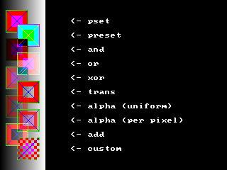

Put (Graphique)

Copie une image sur une autre image ou sur l'écran
Put [ target, ] [ STEP ] ( x,y ), source [ ,( x1,y1 )-[ STEP ]( x2,y2 ) ] [ ,method [ ,( alphaval|value|blender [ ,param]) ] ]
target
Put peut être utilisé pour dessiner une image sur une autre image. Les coordonnées x et y sont affectées par le dernier appel à View et Window, et l'image placée respecte la région de découpage courante validée par le dernier appel à View. L'image est tronquée si elle est dessinée en-dehors du tampon destination.
Tampons Image Valides
Le programme ci-dessous donne un exemple simple de la façon d'utiliser Put pour placer une image à l'écran, incluant la création d'un tampon image et la libération de la mémoire aprés utilisation.

L'exemple ci-dessous montre comment allouer de la mémoire pour une image, puis dessiner celle-ci en utilisant différentes méthodes, y compris en utilisant une fonction personnelle, puis comment libérer la mémoire utilisée:
Syntaxe
Put [ target, ] [ STEP ] ( x,y ), source [ ,( x1,y1 )-[ STEP ]( x2,y2 ) ] [ ,method [ ,( alphaval|value|blender [ ,param]) ] ]
Paramètres
target
est l'adresse du tampon où l'image doit être
dessinée (destination). Si omis, l'image est "blittée" (affichée) à
l'écran. Voir ci-dessous.
STEPindique que les coordonnées (x, y) sont relatives à la position courante du curseur graphique.
(x, y)indique les coordonnées par rapport au coin en haut à gauche du tampon destination ou de l'écran, sur lequel l'image est dessinée.
sourceest l'adresse du tampon image sur lequel dessiner. Voir ci-dessous.
(x1, y1)-[ STEP ](x2, y2)une zone rectangulaire dans le tampon source, utilisée pour le dessin. Si omise, le tampon entier est utilisé pour le dessin. STEP indique que x2 et y2 sont relatifs respectivement à x1 et y1.
methodspécifie la méthode utilisée pour dessiner l'image sur le tampon destination et peut être une des méthodes suivantes (XOR est la méthode par défaut):
Méthodes indépendantes de l'arrière-plan
valueMéthodes indépendantes de l'arrière-plan
PSet : Les valeurs pixel sont copiées sans modification.
PRESET : Les valeurs pixel source sont complémentées à 1 négativement (1's-complement negated) avant la copie.
Trans : Les valeurs pixel source sont copiées sans modification. Ne dessine pas les pixels source du masque de couleur. Voir ci-dessous.
Méthodes dépendant de l'arrière-planPRESET : Les valeurs pixel source sont complémentées à 1 négativement (1's-complement negated) avant la copie.
Trans : Les valeurs pixel source sont copiées sans modification. Ne dessine pas les pixels source du masque de couleur. Voir ci-dessous.
And : Les pixels destination subissent un AND avec les pixels source (dest AND source). Voir ci-dessous.
Or : Les pixels destination subissent un OR avec les pixels source (dest OR source). Voir ci-dessous.
Xor : Les pixels destination subissent un XOR avec les pixels source (dest XOR source). Voir ci-dessous.
Alpha : Source est mélangée avec un facteur de transparence spécifié soit par le paramètre value, soit dans les pixels individuels de l'image. Voir ci-dessous.
Add: Source est multiplié par une valeur et ajoutée avec saturation à la destination. Voir ci-dessous.
Custom : Utilise une fonction définie par l'utilisateur pour effectuer le mélange de la source avec la destination. Voir ci-dessous.
Or : Les pixels destination subissent un OR avec les pixels source (dest OR source). Voir ci-dessous.
Xor : Les pixels destination subissent un XOR avec les pixels source (dest XOR source). Voir ci-dessous.
Alpha : Source est mélangée avec un facteur de transparence spécifié soit par le paramètre value, soit dans les pixels individuels de l'image. Voir ci-dessous.
Add: Source est multiplié par une valeur et ajoutée avec saturation à la destination. Voir ci-dessous.
Custom : Utilise une fonction définie par l'utilisateur pour effectuer le mélange de la source avec la destination. Voir ci-dessous.
est une valeur de 0 à 255 spécifiant la valeur de la transparence pour l'une des méthodes de transformation ADD ou ALPHA.
blender spécifie l'adresse de la fonction utilisateur à appeler pour la méthode de transformation CUSTOM. Voir ci-dessous.
param indique le paramètre à passer à la fonction de transformation utilisateur.
Description
Put peut être utilisé pour dessiner une image sur une autre image. Les coordonnées x et y sont affectées par le dernier appel à View et Window, et l'image placée respecte la région de découpage courante validée par le dernier appel à View. L'image est tronquée si elle est dessinée en-dehors du tampon destination.
Tampons Image Valides
Les tampons image source et target doivent être des tampons image valides. Des tampons image valides sont créés par Get ou ImageCreate. Des tampons image valides peuvent être spécifiés dans Put utilisant un tableau avec un index optionnel ou un pointeur avec un index optionnel.
Méthodes de dessinDépendant de la méthode utilisée, les valeurs pixel dans le tampon destination sont utilisées pour calculer les valeurs pixel qui seront dessinées. Les méthodes PSET, PRESET et TRANS n'utilisent pas le tampon destination pour calculer les valeurs finales, au contraire des méthodes AND, OR, XOR, ALPHA et ADD. Les images qui sont dessinées par ces dernières méthodes seront différentes en fonction du contenu du tampon destination.
Différent formats de pixelLe format de pixel d'un tampon image doit être compatible avec la profondeur de couleur du mode de graphique courant; autrement dit, si vous faites l'acquisition d'une image en utilisant Get et que plus tard vous changez de mode écran avec Screen, les données image ne seront peut être pas valides dans ce nouveau mode graphique, et vous ne pourrez peut être pas l'afficher à l'écran. Vous noterez cependant que vous pourrez toujours dessiner un tampon image sur un autre tampon image via Put tant que ces tampons auront été créés avec la même profondeur.
Les méthodes AND, OR et XOR donnent des résultats différents en fonction de la pofondeur de couleur courante, car les pixels sont stockés dans différents formats; voir Formats internes des pixels pour des détails.
Masque de couleurLes méthodes AND, OR et XOR donnent des résultats différents en fonction de la pofondeur de couleur courante, car les pixels sont stockés dans différents formats; voir Formats internes des pixels pour des détails.
Les méthodes TRANS, ALPHA et ADD ne dessinent pas les pixels de l'image source qui utilisent le masque de couleur. Le masque de couleur dépend de la profondeur de la cible (un tampon image ou l'écran): pour des profondeurs jusqu'à 8 bpp (modes avec palette) c'est la couleur d'indice 0, alors qu'en profondeur 'hi/truecolor' (16 et 32 bpp) il correspond à magenta, c'est à dire RGB(255, 0, 255). Notez que dans les modes 32 bpp la valeur alpha d'une couleur n'affecte pas l'identification de la couleur transparente; seuls les 24 bits de poids faibles sont utilisés pour l'identifier. Voir Formats internes des pixels pour plus de détails.
Dessin de la transparence (Alpha drawing)
La méthode ALPHA est utilisable dans deux modes. Si le paramètre value est spécifié, il est utilisé pour spécifier le niveau de transparence pour l'image entière à dessiner; une valeur de 0 dessinera une image complètement transparente, alors qu'une valeur de 255 en dessinera une sans aucune transparence. Ce mode ne fonctionne qu'avec des cibles 'hi/truecolor' (16 et 32 bpp).
Si le paramètre value est omis, la méthode ALPHA prendra la valeur du niveau alpha sur une base par-pixel, permettant de dessiner des images avec un canal alpha (certaines parties de l'image pourront étre plus ou moins transparentes que d'autres). Ce mode ne fonctionne qu'avec des tampons image de 32 bpp, car c'est la seule profondeur de couleur permettant d'inclure la valeur alpha dans chaque pixel.
Jouer avec le canal "alpha"
Si le paramètre value est omis, la méthode ALPHA prendra la valeur du niveau alpha sur une base par-pixel, permettant de dessiner des images avec un canal alpha (certaines parties de l'image pourront étre plus ou moins transparentes que d'autres). Ce mode ne fonctionne qu'avec des tampons image de 32 bpp, car c'est la seule profondeur de couleur permettant d'inclure la valeur alpha dans chaque pixel.
Normalement Put ne permet d'écrire des tampons image que sur des cibles de même profondeur, mais il y a une exception. Quand vous dessinez un tampon image de 8 bpp sur une cible de 32 bpp et que la méthode ALPHA est utilisée, l'image source de 8 bpp est dessinée dans le canal alpha de la cible 32 bpp. Cela permet de valider facilement la totalité du canal alpha d'une image sans étre obligé de manier individuellement ses données pixels.
Méthode CUSTOM de Modification des pixels
La méthode CUSTOM utilise une fonction définie par l'utilisateur pour calculer les valeurs finales des pixels à dessiner dans le tampon destination. Cette fonction sera appelée pour chaque pixel de l'image source, et recevra les valeurs des pixels source et destination et un pointeur de données passé par la fonction Put. La valeur du pixel renvoyée sera celle utilisée pour dessiner sur le tampon destination. La fonction est de la forme:
Declare Function identifier ( ByVal source_pixel As UInteger, ByVal destination_pixel As UInteger, ByVal parameter As Any Ptr) As UInteger
Declare Function identifier ( ByVal source_pixel As UInteger, ByVal destination_pixel As UInteger, ByVal parameter As Any Ptr) As UInteger
identifier est le nom de la fonction. Selon vos désirs.
source_pixel est la valeur du pixel courant de l'image source.
destination_pixel est la valeur du pixel courant de l'image destination.
parameter c'est le paramètre passé par la commande Put. Ce doit être un Pointeur de données. S'il est omis, sa valeur sera zéro.
source_pixel est la valeur du pixel courant de l'image source.
destination_pixel est la valeur du pixel courant de l'image destination.
parameter c'est le paramètre passé par la commande Put. Ce doit être un Pointeur de données. S'il est omis, sa valeur sera zéro.
Exemple
Le programme ci-dessous donne un exemple simple de la façon d'utiliser Put pour placer une image à l'écran, incluant la création d'un tampon image et la libération de la mémoire aprés utilisation.
'' Valide ecran et remplit avec couleur arriere-plan
ScreenRes 320, 200, 32
Paint (0, 0), RGB(64, 128, 255)
'' Valide une image et dessine quelque chose dedans
Dim img As Any Ptr = ImageCreate( 32, 32, RGB(255, 0, 255) )
Circle img, (16, 16), 15, RGB(255, 255, 0), , , 1, f
Circle img, (10, 10), 3, RGB( 0, 0, 0), , , 2, f
Circle img, (23, 10), 3, RGB( 0, 0, 0), , , 2, f
Circle img, (16, 18), 10, RGB( 0, 0, 0), 3.14, 6.28
'' PUT image au centre ecran
Put (160 - 16, 100 - 16), img, Trans
'' Libere memoire image
ImageDestroy img
'' Attend touche appuyee
Sleep
ScreenRes 320, 200, 32
Paint (0, 0), RGB(64, 128, 255)
'' Valide une image et dessine quelque chose dedans
Dim img As Any Ptr = ImageCreate( 32, 32, RGB(255, 0, 255) )
Circle img, (16, 16), 15, RGB(255, 255, 0), , , 1, f
Circle img, (10, 10), 3, RGB( 0, 0, 0), , , 2, f
Circle img, (23, 10), 3, RGB( 0, 0, 0), , , 2, f
Circle img, (16, 18), 10, RGB( 0, 0, 0), 3.14, 6.28
'' PUT image au centre ecran
Put (160 - 16, 100 - 16), img, Trans
'' Libere memoire image
ImageDestroy img
'' Attend touche appuyee
Sleep
L'exemple ci-dessous montre comment allouer de la mémoire pour une image, puis dessiner celle-ci en utilisant différentes méthodes, y compris en utilisant une fonction personnelle, puis comment libérer la mémoire utilisée:
Declare Function checkered_blend( ByVal src As UInteger, ByVal dest As UInteger, ByVal param As Any Ptr ) As UInteger
Screen 14, 32 '' valide 320*240*32 mode gfx
Dim As Any Ptr sprite
Dim As Integer counter = 0
sprite = ImageCreate( 32, 32 ) '' alloue memoire pour sprite 32x32
Line sprite, ( 0, 0 )-( 31, 31 ), RGBA(255, 0, 0, 64), bf '' dessine un sprite ...
Line sprite, ( 4, 4 )-( 27, 27 ), RGBA(255, 0, 0, 192), bf
Line sprite, ( 0, 0 )-( 31, 31 ), RGB(0, 255, 0), b
Line sprite, ( 8, 8 )-( 23, 23 ), RGBA(255, 0, 255, 64), bf
Line sprite, ( 1, 1 )-( 30, 30 ), RGBA(0, 0, 255, 192)
Line sprite, ( 30, 1 )-( 1, 30 ), RGBA(0, 0, 255, 192)
Cls
Dim As Integer i : For i = 0 To 63 '' draw l' arriere-plan
Line( i,0 )-( i,240 ), RGB( i * 4, i * 4, i * 4 )
Next i
'' Demonstration toutes methodes dessin ...
Put( 8,14 ), sprite, PSet
Put Step( 16,20 ), sprite, PReset
Put Step( -16,20 ), sprite, And
Put Step( 16,20 ), sprite, Or
Put Step( -16,20 ), sprite, Xor
Put Step( 16,20 ), sprite, Trans
Put Step( -16,20 ), sprite, Alpha, 96
Put Step( 16,20 ), sprite, Alpha
Put Step( -16,20 ), sprite, add, 192
Put Step( 16,20 ), sprite, Custom, @checkered_blend, @counter
'' Affiche une description a cote chaque demo
Draw String (100, 26), "<- pset"
Draw String Step (0, 20), "<- preset"
Draw String Step (0, 20), "<- and"
Draw String Step (0, 20), "<- or"
Draw String Step (0, 20), "<- xor"
Draw String Step (0, 20), "<- trans"
Draw String Step (0, 20), "<- alpha (uniform)"
Draw String Step (0, 20), "<- alpha (per pixel)"
Draw String Step (0, 20), "<- add"
Draw String Step (0, 20), "<- custom"
ImageDestroy( sprite ) '' libere memoire sprite
Sleep : End 0
'' Fonction blender perso/span>
Function checkered_blend( ByVal src As UInteger, ByVal dest As UInteger, ByVal param As Any Ptr ) As UInteger
Dim As Integer Ptr counter
Dim As UInteger pixel
counter = Cast(Integer Ptr, param)
pixel = IIf(((*counter And 4) Shr 2) Xor ((*counter And 128) Shr 7), src, dest)
*counter += 1
Return pixel
End Function
Screen 14, 32 '' valide 320*240*32 mode gfx
Dim As Any Ptr sprite
Dim As Integer counter = 0
sprite = ImageCreate( 32, 32 ) '' alloue memoire pour sprite 32x32
Line sprite, ( 0, 0 )-( 31, 31 ), RGBA(255, 0, 0, 64), bf '' dessine un sprite ...
Line sprite, ( 4, 4 )-( 27, 27 ), RGBA(255, 0, 0, 192), bf
Line sprite, ( 0, 0 )-( 31, 31 ), RGB(0, 255, 0), b
Line sprite, ( 8, 8 )-( 23, 23 ), RGBA(255, 0, 255, 64), bf
Line sprite, ( 1, 1 )-( 30, 30 ), RGBA(0, 0, 255, 192)
Line sprite, ( 30, 1 )-( 1, 30 ), RGBA(0, 0, 255, 192)
Cls
Dim As Integer i : For i = 0 To 63 '' draw l' arriere-plan
Line( i,0 )-( i,240 ), RGB( i * 4, i * 4, i * 4 )
Next i
'' Demonstration toutes methodes dessin ...
Put( 8,14 ), sprite, PSet
Put Step( 16,20 ), sprite, PReset
Put Step( -16,20 ), sprite, And
Put Step( 16,20 ), sprite, Or
Put Step( -16,20 ), sprite, Xor
Put Step( 16,20 ), sprite, Trans
Put Step( -16,20 ), sprite, Alpha, 96
Put Step( 16,20 ), sprite, Alpha
Put Step( -16,20 ), sprite, add, 192
Put Step( 16,20 ), sprite, Custom, @checkered_blend, @counter
'' Affiche une description a cote chaque demo
Draw String (100, 26), "<- pset"
Draw String Step (0, 20), "<- preset"
Draw String Step (0, 20), "<- and"
Draw String Step (0, 20), "<- or"
Draw String Step (0, 20), "<- xor"
Draw String Step (0, 20), "<- trans"
Draw String Step (0, 20), "<- alpha (uniform)"
Draw String Step (0, 20), "<- alpha (per pixel)"
Draw String Step (0, 20), "<- add"
Draw String Step (0, 20), "<- custom"
ImageDestroy( sprite ) '' libere memoire sprite
Sleep : End 0
'' Fonction blender perso/span>
Function checkered_blend( ByVal src As UInteger, ByVal dest As UInteger, ByVal param As Any Ptr ) As UInteger
Dim As Integer Ptr counter
Dim As UInteger pixel
counter = Cast(Integer Ptr, param)
pixel = IIf(((*counter And 4) Shr 2) Xor ((*counter And 128) Shr 7), src, dest)
*counter += 1
Return pixel
End Function

Différences avec QB
- target est nouveau pour FreeBASIC
- Les méthodes TRANS, ALPHA, ADD et CUSTOM sont nouvelles pour FreeBASIC.
- Dans QB, la destination est toujours l'écran.
- QB produit une erreur de fonctionnement en cas d'écriture en dehors des limites de l'image.
- Dans QB, seuls des tableaux (arrays) peuvent être spécifiés comme images source.
Voir aussi